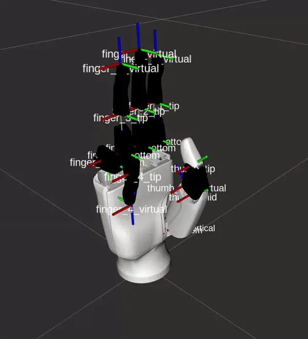
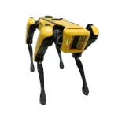
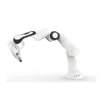

Salman Omar Sohail
Robotics Engineer
PROJECT CLOSEUP
Mobile Manipulation Platform Ridgeback UR5e
INDUSTRIAL PROJECT HIGHLIGHTS

Dual-Arm Mobile Manipulation Platform
ROS2 Jazzy stack for Clearpath Ridgeback with dual xARM850, Robotiq 2F-140 grippers,
and 3-axis rig. MoveIt2 motion planning, Nav2 navigation, Ouster LiDAR, ZED2i integration.

Industrial Orchard Packaging
Automated apple packaging with xARM6 and ZED2i depth camera. Color-based orientation
detection, compliant control, MoveIt2 planning with Robotiq grippers.

ROVO3 Tracked Robot Platform
ROS2 Jazzy tracked robot with CAN bus (500kbps), IMU fusion odometry, web interface
with 3D GLTF viz, VNC streaming, Nav2 integration.

Outdoor Security Patrol System
GPS-based patrol for Jackal UGV using Nav2, LIO-SAM SLAM with Ouster LiDAR,
Steamdeck joystick interface, web dashboard for mission planning.
Underground Infrastructure Inspection
Unitree Go2 quadruped for tunnel inspection with LiDAR, thermal camera, gas sensors.
3D mapping pipelines for survey documentation in hazardous environments.

Quadruped Low-Level Gait Planning
Unitree A1 gait planning with TOWR optimization framework, CHAMP controllers,
real-time visualization tools for terrain navigation.

Vineyard 3D Reconstruction
Husky A200 with 12+ sensors for precision agriculture. Ouster LiDAR, Fixposition GPS,
web interface, Nav2 for systematic field coverage.

Retail Service Bot (NDA)
Autonomous retail robot for customer guidance. Nav2 navigation, multi-sensor
perception, web dashboard for fleet management.
Humanoid Logistics Demo
Unitree H1/G1 ROS2 drivers with Livox LiDAR, GPS waypoints, Steamdeck teleop,
RL locomotion deployment, web dashboards.

Robotic Bartender System
Husky + xARM for automated beverage preparation. MoveIt2 planning,
dispensing algorithms, ROS2 service-based order management.

ALOHA Bimanual Teleoperation
ROS1 Noetic 4-arm teleop with Interbotix/Dynamixel, RealSense D405 cameras,
master-follower control for imitation learning.

Inspire Dexterous Hand
ROS2 Humble drivers for 6-DOF hand. Modbus/RS485 communication,
position/force/speed control, calibration procedures.

Ascento Bipedal Integration
ROS2 Humble firmware for wheeled-bipedal robot. Livox Mid360, Fixposition GPS,
Gazebo Fortress sim, Steamdeck teleop.

Universal Web Control Interface
Flask platform for 15+ robots. Three.js 3D viz, virtual joystick, GPS waypoints,
rosbag capture, VNC access, Cython optimized.

Quadruped ROS Ecosystem (QRE)
Unitree A1/Go1/Go2/B1/B2 drivers. CHAMP controllers, LIO-SAM SLAM,
Nav2, Open Manipulator, Gazebo sim, online docs.

Go2 EDU Mobile Platform
ROS2 Foxy/Humble integration for Unitree Go2. Livox Mid360, GPS waypoint nav,
Steamdeck controller, AprilTag detection.

B2/B2-W Industrial Quadruped
ROS2 Humble stack for Unitree B2 series. Livox LiDAR, web dashboard,
multi-machine ROS setup, industrial inspection applications.

Ridgeback Omnidirectional Base
Clearpath Ridgeback R100 integration. Nav2 navigation, Ouster LiDAR,
mecanum drive control, web interface, URDF modeling.
Dingo Indoor Mobile Robot
Clearpath Dingo D100 with Piper arm integration. ROS2 Jazzy, MoveIt2,
indoor navigation, web-based control interface.

Agilex Hunter 2.0 Platform
ROS2 Humble integration for Agilex Hunter. CAN bus driver, Ouster LiDAR,
uBlox GPS, Nav2 navigation, web dashboard.

Husky A300 Multi-Unit Platform
Clearpath Husky A300 with advanced sensor suite. ROS2 Jazzy,
Fixposition GPS, multi-LiDAR setup, web interface.

Warthog Heavy-Duty Platform
Clearpath Warthog integration for outdoor heavy-duty applications.
Nav2, Gazebo simulation, rugged terrain navigation.

UR5e Mobile Manipulation
Universal Robots UR5e on Ridgeback. ROS2 Jazzy driver, MoveIt2,
Robotiq gripper, lift mechanism, pan-tilt camera.

Open Manipulator Integration
ROBOTIS Open Manipulator on Go1/Go2 quadruped. ROS2 Foxy drivers,
Dynamixel control, mobile manipulation demos.
Gazebo Simulation Environments
Gazebo Fortress/Harmonic sims for all platforms. ros2_control integration,
sensor plugins, physics tuning, CI/CD testing.

3D SLAM Pipelines
LIO-SAM, FAST-LIO, and slam_toolbox integration. Multi-LiDAR fusion,
loop closure, map saving/loading across platforms.

Go1 EDU Research Platform
Unitree Go1 with ROS1/ROS2 bridge. CHAMP gait controller,
RSLidar integration, multi-machine setup, Gazebo sim.

Boston Dynamics Spot Integration
ROS2 driver development for Spot robot. SDK integration,
autonomous navigation, sensor payload management.
Kinova Gen3 Manipulation
Kinova Gen3 arm integration with ROS2. MoveIt2 planning,
force-torque sensing, compliant control modes.

Franka Emika Research Arm
Franka Panda integration for research. libfranka driver,
impedance control, real-time control loops.

Direct Drive Diablo Platform
Wheeled-legged Diablo robot integration. ROS2 drivers,
balance control, teleoperation interface.

Unitree G1 Humanoid
ROS2 integration for G1 humanoid. Nav2 navigation,
Livox LiDAR, GPS waypoints, web dashboard.

xARM Series Integration
UFactory xARM5/6/7/850 ROS2 drivers. MoveIt2 configs,
gripper control, vision-guided picking applications.
ACADEMIC PROJECT HIGHLIGHTS

PROPERTY-BASED TESTING: FORMALIZED ROBOTIC TESTING FOR STANDARD COMPLIANCE
R&D that automates robotic standards validation through simulated testing, verifying
compliance, identifying missing functionalities and software bugs in heterogeneous robots.

FUNCTIONAL NEAR-INFRARED SPECTROSCOPY (FNIRS) TAP DETECTION
Functional near-infrared spectroscopy (fNIR) detected finger taps from brain
with a 92% test accuracy using a Deep Neural Network.

INTELLIGENT WINDING MACHINE AS A FLEXIBLE MANUFACTURING SYSTEM
Design and fabrication of an automated wireless coil-winding machine for
stator coils of 70cc motorcycles.

TOYOTA HUMAN SUPPORT ROBOT TESTING FRAMEWORK
Research and development of automated property-based testing for the Toyota
HSR robot’s perception, manipulation, and navigation stacks.
OSMOSIS FAULT-TOLERANT SYSTEM
Implementation of a fault-tolerant manager that detects errors within the
\href{https://robotnik.eu/products/mobile-robots/summit-xl-en-2/}{Summit XL robot} and
executes the recovery process during a mission around an airport.

DEEP-LEARNING & NATURAL LANGUAGE PROCESSING
Development of entity detectors, image classifiers, text-extractors,
text-summarizers, chatbots, form-fillers, text-preprocessors and more.